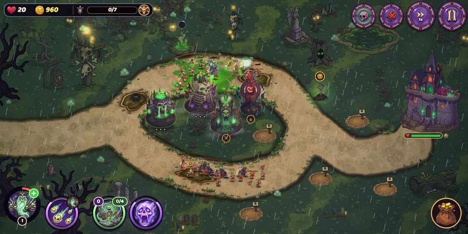
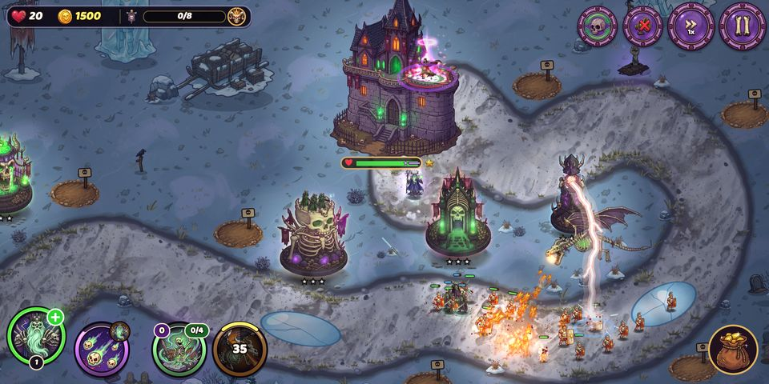
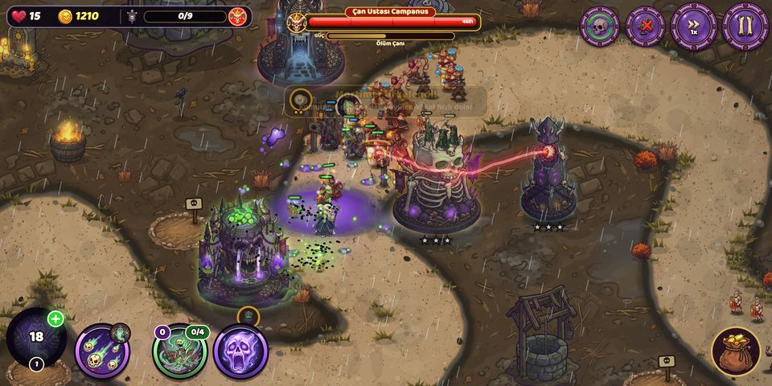
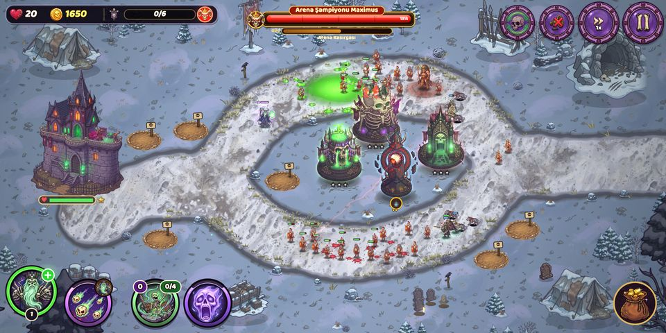
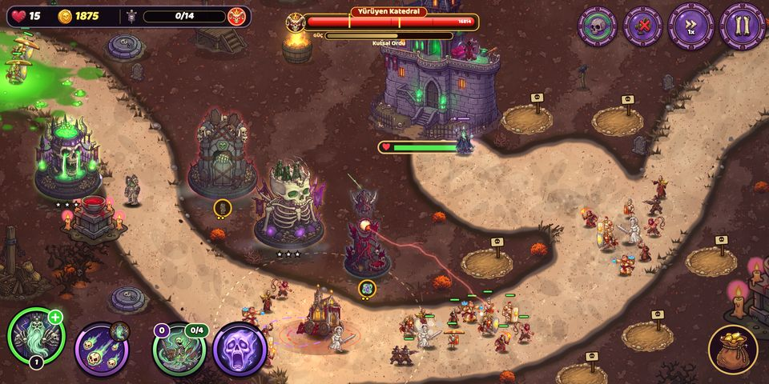
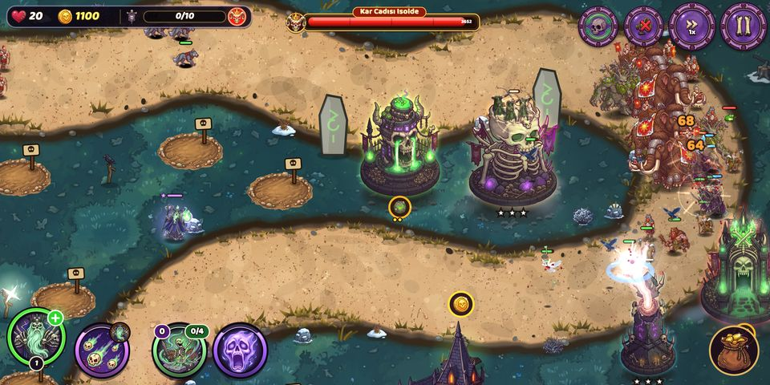
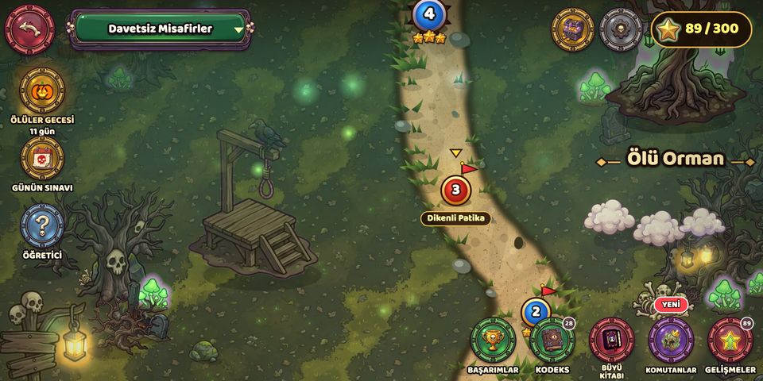
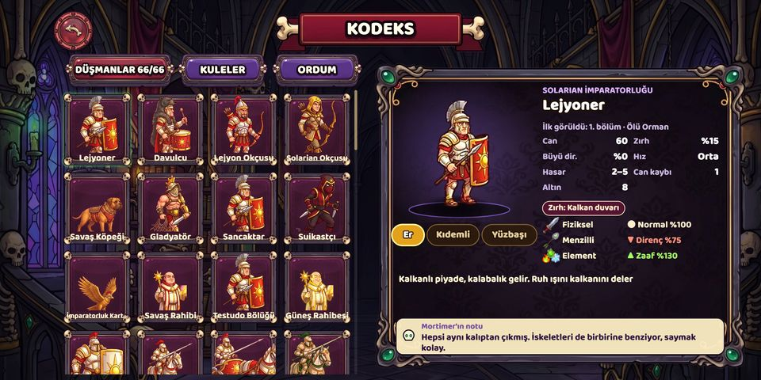

About the game
The Cursed Border is Mortimer's land. The graves are his, and so are the dead. First came the Solarian Empire, then the Inquisition and its witch hunt, and now the legions of the north are at the gate. Bad idea: whoever trespasses on his land rises again in his army.
Build bone towers, send skeleton warriors out of your crypts and raise fallen enemies into your own army. Lord of Graves is a hand-drawn tower defense game told from the villain's side, where the necromancer is the hero and the shining empire is the problem.
"Every empire is built on a lie. Ours began with a grape." · Mortimer, Lord of Graves
The story in short
Three hundred years ago the founding Emperor choked on a grape at his own victory feast. The court told the people he had risen to the sun, and handed the body to the palace gravedigger, a young man who whispered forbidden words to the dead. His silence bought him a decree: every land where the sun sets would be his. The consuls laughed, exiled him to the worst corner of the continent and later sent an assassin. He died. It took three days.
Now a new emperor has found the secret file, and the Empire wants the body back. Mortimer is officially dead, his decree is void, and an army is at his door.
Features
- 60 levels across three regions: Uninvited Guests, Witch Hunt and Northern Frost
- 4 towers, each with 3 tiers and two specializations at tier 4: Ghost Archers or Heavy Crossbowmen, Grave Keeper or Death Knight or a Bone Golem, Life Drainer or the lightning-storm Doom Eye, Bone Shot or Black Plague
- Raise fallen enemies into your own army
- Mortimer's grimoire: Raise Dead, Fear, Bone Wall, Soul Drain and a fire-breathing Bone Dragon (or the Ice Dragon); spells grow stronger the more you use them
- Six undead commanders, Leonidas, Merlin, Robin, Báthory, Goliath and the Plague Doctor, each with ranks, a skill tree and two powers
- 60+ enemy types and 21 bosses: legionaries, war elephants, siege towers, inquisitors, walking cathedrals, mammoths
- Fog-of-war campaign map, Heroic, Endless Night and Bare Bones modes, a daily trial
- A fully voiced, smug narrator: Mortimer has a comment for everything
Trailer
Screenshots
Click for full resolution (2640 × 1320).
















Logo, icon and key art


All images may be used freely in coverage of the game.